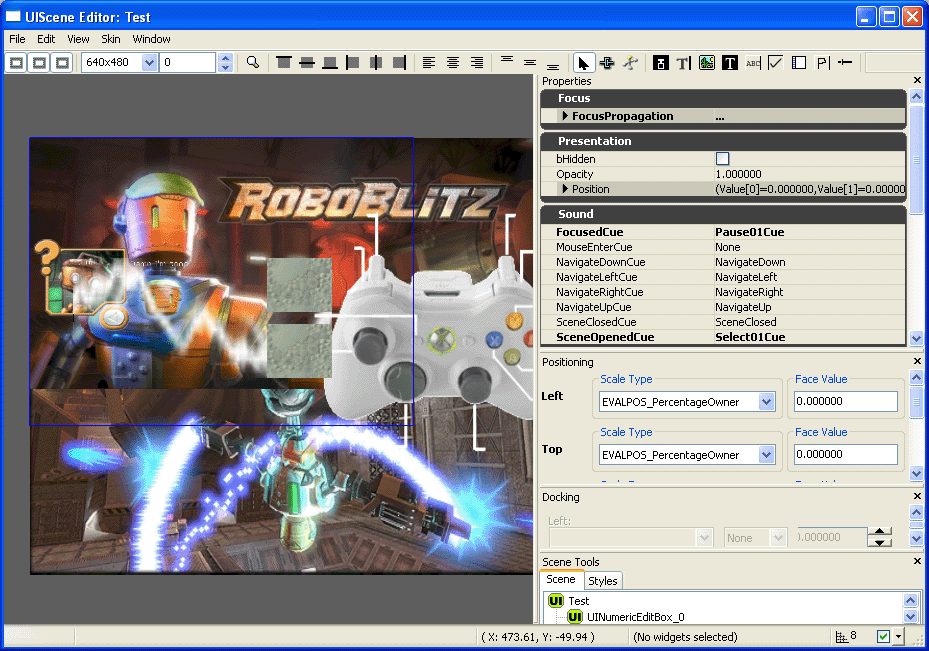

Solid Snake/Opening A UIScene With Unrealscript
How to open an ingame UIScene
Introduction
On first appearance when I noticed the UIScene selector in UnrealED, I didn't really pay much attention to it. One of the biggest things I ever did for UT2004 was to make a cool windows interface for it. Now that UT2004 is more less dead (in terms of modding), I have pretty much let go of any remainding projects. In any case, I was particularly interested in how interfaces worked in Unreal Engine 3.0, whether it was done using a similar setup to xInterface or otherwise. In this case, it appears that Unreal Engioe 3.0 now has its own UI editing extension. This would definately mean quicker setup times for creating interfaces [as compared to the relatively slow creation time]. On greater inspection it appears to be almost completely abstracted away from Unrealscript to handle its interactions, instead opting to use Kismet to handle those sorts of things. This is a really nice change, as it tends to then use a more visual approach to an obvious visual entity in any game.
Preface
Upon grazing the scripts (or what is barely there) it appears that player controllers get assigned a 'uiinteraction', or at least they are able to call upon one, using this function 'final function uiinteraction getuicontroller()'. Because RoboBlitz has very little intact source code, I have no idea how it returns or finds it. All we need to know at this point, is that it usually always returns a valid value.
From there, I started exploring the UIInteraction class, and found this function 'final function bool openscene(uiscene scene, optional localplayer sceneowner, optional out uiscene openedscene)'. So its obvious that this function opens a UIScene using scene as its required parameter. I haven't explored much into what 'localplayer' is at this point. This function also seems to let outs a variable pointing to the opened scene. I guess you could use this if you wanted to check if a UIScene had been successfully created or not.
Right, so now we have the basic script knowledge (I obviously researched a lot more, but its far too long and boring to really detail my entire search pattern. If you really need more information, I suggest you start where I ended up, and try to work backwards).
Quick UnrealED 4.0 work

So, start working with the UIScene editor in UnrealED. I ended up with something like this (after 5 minutes). I added a few different UI components to try them out. It appears you need to initiate Kismet to setup some of them to actually work. I haven't explored much into this yet, but I will when I'll need to use it. [Oh for those of you who are wondering, it is possible to create custom Kismet functions. Kismet is certainly not limited to what is there, it is basically small modular Unrealscript classes, which Kismet then controls to form a linked list of functions essentially ... so in this case, if you need new/different functions than the ones you seen there ... you could write your own]. I saved this as 'Test' in a package called 'MyScenes'.
Unrealscript
00001 class xPlayer extends RBArenaPController; 00002 00003 auto simulated state playerwaiting 00004 { 00005 reliable client function clientwarmupstarted(); 00006 00007 function RenderMainMenu() 00008 { 00009 GetUIController().OpenScene(UIScene'MyScenes.Test'); 00010 } 00011 00012 begin: 00013 autostartifappropriate(); 00014 00015 if(worldinfo.netmode == nm_client || worldinfo.netmode == nm_listenserver) 00016 { 00017 if(rgri(worldinfo.gri).binwarmupround) 00018 myhud.gotostate('warmup'); 00019 else if(worldinfo.gri.bmatchhasbegun && worldinfo.gri.remainingtime > 0) 00020 gotostate( 'playerselect' ); 00021 } 00022 else if(WorldInfo.NetMode == NM_StandAlone && !WorldInfo.GRI.bMatchHasBegun) 00023 RenderMainMenu(); 00024 }
And there we have it. You can parse a direct reference from the object inside a package as one of the parameters for OpenScene, just like how you would parse say Texture'PackageName.TextureName' and so forth. And from here, RoboBlitz will now load up your newly created UIScene. Sweet.
Comments
Graphik: Nice work. I've fixed up the title; WordsSmashedTogether are unnecessary.
Solid Snake: Many thanks